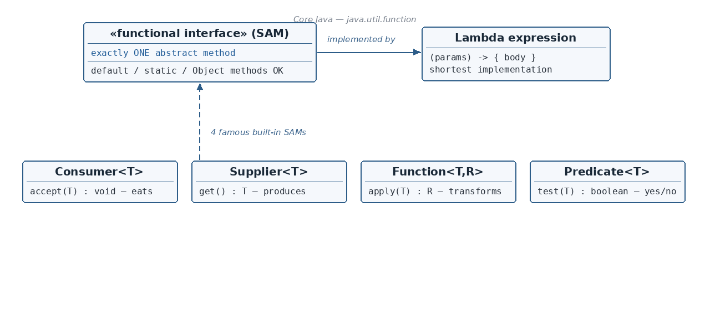

☕ 7 min read · 🎬 Video walkthrough · 📊 UML diagram · 💻 Runnable code
⚡ In a nutshell — What a functional interface is (the "one abstract method" rule) · The @FunctionalInterface annotation and why it is optional but useful · Which methods do NOT count against the one-abstract-method rule (default, static, and Object-class methods) · Three ways to implement a functional interface: implements, anonymous class, and lambda expression
Definition: If an interface contains only 1 abstract method, it is known as a functional interface.

The one diagram that ties it all together.
Everyday analogy: a functional interface is like a vending machine with exactly one button. There is no confusion about what you are asking for — press the button, get the job done. Because there is only one job, Java can let you describe that job with a very short piece of code (a lambda) instead of a whole class.
A functional interface is also called a SAM interface (Single Abstract Method).
The @FunctionalInterface Annotation
You can put @FunctionalInterface at the top of the interface — but it is optional.
Its job is safety: if someone later adds a second abstract method by mistake, the compiler immediately shows an error instead of silently breaking all your lambdas.
@FunctionalInterfacepublicinterfaceBird {
void canFly(String val);
// void canSwim(); // adding this would cause a COMPILE ERROR thanks to the annotation
}
What Still Counts as "Only One Abstract Method"?
The rule sounds strict, but a functional interface is still allowed to contain other kinds of methods. Only abstract methods are counted — and even then, methods that already exist on Object do not count!
Alongside the single abstract method, you may have:
default methods — e.g. default void getHeight() { } (they have a body, so they are not abstract)
static methods — e.g. static void canEat() { } (they also have a body)
Methods inherited from the Object class — e.g. String toString();
Every class in Java automatically extends Object, so every object already hastoString(), equals(), hashCode(), etc. Declaring them in the interface adds no new "work to do" — any implementing class already has an implementation inherited from Object.
publicinterfaceTestInterface {
String toString(); // looks abstract... but it is an Object-class method
}
publicclassTestClassImplementsimplementsTestInterface {
// Although we are NOT overriding toString(), this compiles perfectly.// The version inherited from Object already satisfies the contract.
}
Remember: In a functional interface, only 1 abstract method is allowed — but you can freely add default methods, static methods, and methods inherited from the Object class.
An anonymous class is a class with no name, created and used on the spot. Useful when you need the implementation only once and don't want to create a separate file.
publicclassMain {
publicstaticvoid main(String[] args) {
Bird eagle = newBird() { // class with no name, defined inline@Overridepublicvoid canFly(String val) {
System.out.println("Hi, flying " + val);
}
};
eagle.canFly("Vertical");
}
}
Output:
Hi, flying Vertical
Way 3 — A Lambda Expression
A lambda expression is simply a shorter way of implementing a functional interface. Because the interface has only one abstract method, Java already knows which method you are implementing — so you only write the parameters and the body.
Remember: The -> symbol is called the lambda operator (arrow operator). Left side = the abstract method's parameters, right side = its body. Compare Way 2 and Way 3: the lambda removed all the ceremony (new Bird(), method name, @Override) and kept only what matters.
Why the error?Bird inherits canBreathe() from its parent and adds canFly() — that is two abstract methods, which violates the @FunctionalInterface promise.
Remember: If canBreathe() in the parent had been a default method (with a body), there would be no issue — Bird would then contain only one abstract method (canFly) and would be a valid functional interface.
Use Case 2 — A plain interface extending a FUNCTIONAL interface: VALID
@FunctionalInterfacepublicinterfaceLivingThing {
publicboolean canBreathe();
}
publicinterfaceBirdextendsLivingThing { // valid!void canFly(String val); // second abstract method is fine here
}
Why is this OK?Bird never claimed to be a functional interface — it has no @FunctionalInterface annotation. A normal interface may have as many abstract methods as it wants. Only LivingThing must keep its single-method promise, and it does.
Use Case 3 — Functional interface extending another FUNCTIONAL interface
@FunctionalInterfacepublicinterfaceLivingThing {
publicboolean canBreathe();
}
@FunctionalInterfacepublicinterfaceBirdextendsLivingThing { // COMPILE ERROR as written belowvoid canBreathe(); // returns void — DIFFERENT signature!
}
Why the error? The child declares void canBreathe() while the parent has boolean canBreathe(). Same name and parameters but different return types — Java cannot merge them into one method, so Bird ends up breaking the rules.
The fix: if the child re-declares the method with the exact same signature, it is allowed:
@FunctionalInterfacepublicinterfaceBirdextendsLivingThing {
publicboolean canBreathe(); // same signature as the parent -> ALLOWED
}
Now parent and child are describing the same single abstract method, so both remain valid functional interfaces.
Quick Revision
Functional interface = exactly 1 abstract method (also called a SAM interface).
@FunctionalInterface is optional, but it makes the compiler guard your interface against accidental extra abstract methods.
default methods, static methods, and Object-class methods (like toString()) do NOT count toward the one-method limit.
Three implementation styles: implements class → anonymous class → lambda expression (shortest).
Lambda syntax: (parameters) -> { body }; the -> is the lambda/arrow operator.
Consumer takes input, returns nothing (accept). Supplier takes nothing, returns a value (get). Function transforms input into output (apply). Predicate returns true/false (test). All live in java.util.function.
Extending rules: functional extending non-functional with an extra abstract method = error (fine if the parent method is default); plain interface extending a functional one = fine; functional extending functional = fine only if the abstract method signature is exactly the same.
👏 Found this useful? Give it a few claps so more developers discover it,
and follow for the whole series — every article ships with a UML diagram, runnable code, a narrated
video, and a companion PDF. Happy building! 🚀